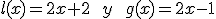
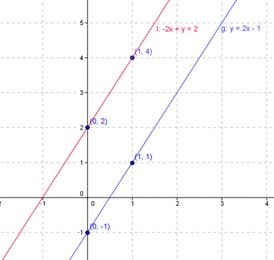
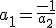
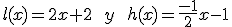
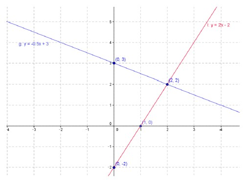

Matemática: Función Lineal
Condicion de paralelismo y perpendicularidad
Dos rectas son paralelas si y sólo si tienen la misma pendiente y diferentes ordenadas al origen.
Si se grafican cada una de las funciones lineales definidas respectivamente por:

Se puede observar que las rectas que resultan son paralelas:

Dadas dos rectas de pendientes a1 y a2 respectivamente, se dice que dichas rectas son perpendiculares si 
Si se grafican cada una de las siguientes funciones lineales se puede observar que las rectas que resultan son perpendiculares:



Vamos a profundizar sobre estos conceptos en el siguiente video.
Link - Condición de paralelismo y perpendicularidad
Obra publicada con Licencia Creative Commons Reconocimiento Compartir igual 4.0